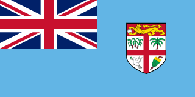
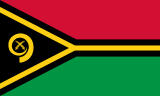
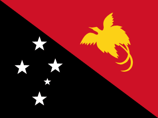
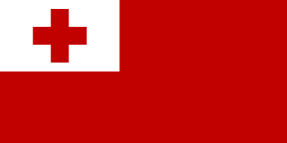
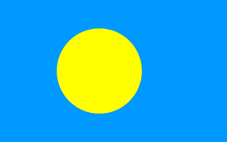
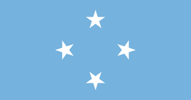

immensité, faune unique, diversité des paysages, dynamisme urbain

pureté, paysages de cinéma, culture maorie, adrénaline

hospitalité, sourire, lagons turquoise, détente absolue

volcans accessibles, traditions intactes, plongée sur épaves, nature sauvage

diversité linguistique, tribus ancestrales, biodiversité, aventure
mode de vie traditionnel, piscines naturelles, calme, authenticité polynésienne

baleines à bosse, monarchie préservée, îles sauvages, spiritualité

protection de l'environnement, fonds marins exceptionnels, eaux cristallines

sites archéologiques mystérieux, archipels isolés, calme total